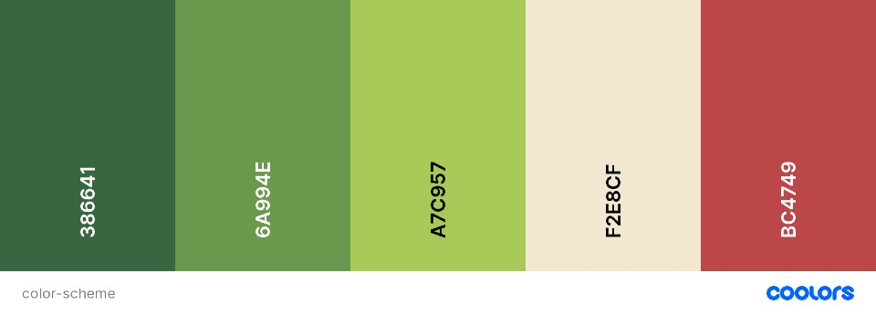

site name and logo
Chamber of Commerce of Madre de Dios
site propose
the propose of this site is is to create an environment in which it can manage, facilitate the use and promote a chamber of commerce in the Madre de Dios region
target audience
the target audience of this site will be startups, small medium and large companies,
site map

colorscheme
typography
font-family: 'Nunito Sans', sans-serif;
font-family: 'Otomanopee One', sans-serif;